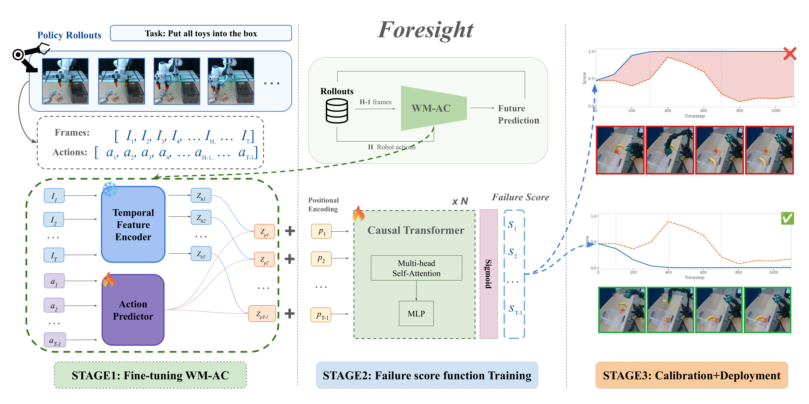
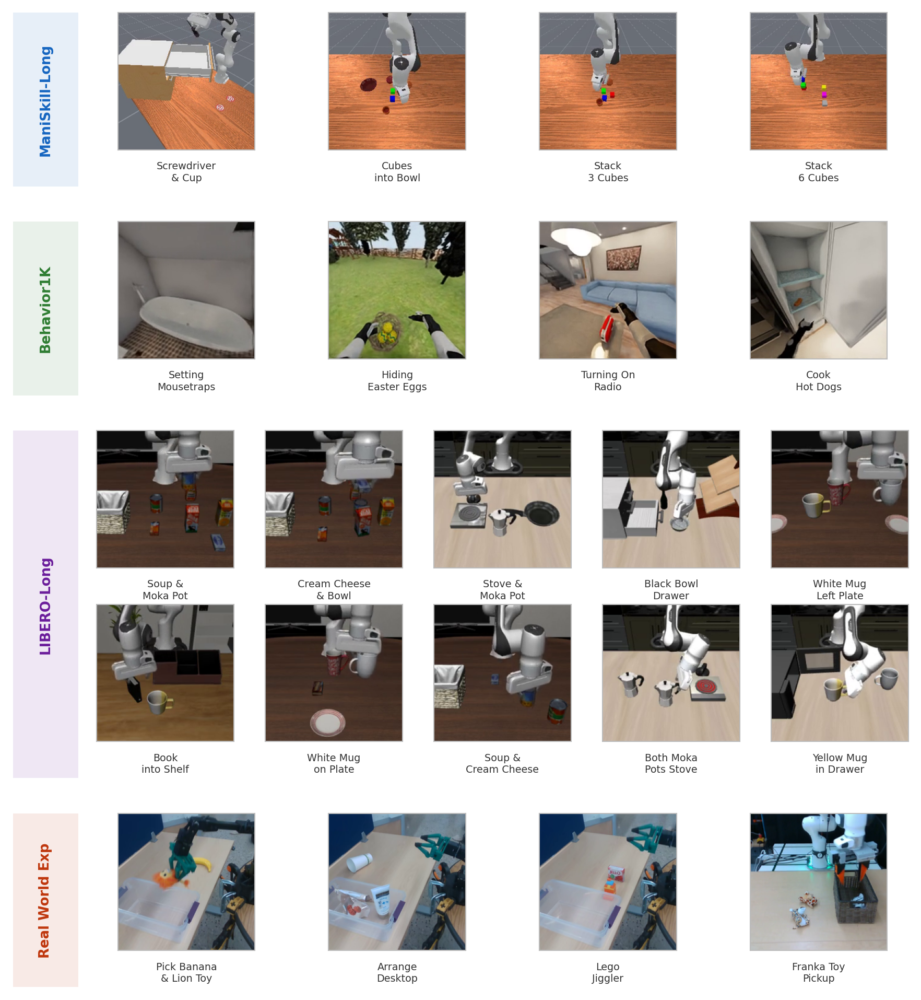

Foresight: Failure Detection for Long-Horizon
Robotic Manipulation with Action-Conditioned
World Model Latents
*Equal contribution †Corresponding author
Abstract
Long-horizon tasks are common in real-world robotic deployments, yet failure detection for such tasks remains underexplored. Detecting failures in long-horizon robotic tasks is particularly challenging because failure onset is often ambiguous and dense temporal annotations are typically unavailable. We present Foresight, a failure detection framework that monitors manipulation trajectories using latent representations from an action-conditioned world model. Foresight is trained using only final task-level success or failure labels. By leveraging predictive world-model embeddings, our method provides a unified framework for failure detection across different policies. We further use functional conformal prediction (FCP) to calibrate detection thresholds adaptively. We evaluate Foresight with state-of-the-art vision-language-action policies in simulation on LIBERO-Long, ManiSkill-Long, and BEHAVIOR-1K, compare it against state-of-the-art failure detection methods, and validate it on real robots with three long-horizon tasks on ReactorX and one task on Franka arm. Our results suggest that action-conditioned world-model embeddings provide a scalable representation for reliable failure monitoring in long-horizon manipulation.
Video Presentation
Contributions
- We propose Foresight, a failure detection framework for long-horizon robotic manipulation that feeds latent representations from an action-conditioned world model — consisting of a frozen visual encoder and a trained AC predictor — into a causal Transformer failure detector.
- We show that action-conditioned world model embeddings enable failure detection with supervision from only final task success/failure labels across different VLA policies, and incorporate functional conformal prediction to adaptively calibrate detection thresholds for reliable long-horizon failure detection.
- We provide a comprehensive evaluation across diverse manipulation tasks, policies, robotic embodiments, simulation benchmarks (LIBERO-Long, ManiSkill-Long, BEHAVIOR-1K), and real-world experiments, demonstrating the effectiveness of Foresight against state-of-the-art failure detection methods.
Method
Foresight consists of three stages: fine-tuning an action-conditioned world model, training a causal Transformer failure detector, and calibrating with functional conformal prediction for deployment.

We freeze the visual encoder of the pretrained V-JEPA 2-AC (ViT-Giant) and train the action-conditioned predictor from scratch on robot rollouts. The predictor learns to predict future latent states conditioned on the policy's action chunks.
At each replanning step the world model produces a hidden latent zh (current observation) and a predicted latent zp (expected under the next action chunk). A causal Transformer aggregates these over time, outputting a per-step failure score st trained on trajectory-level labels only.
Functional conformal prediction (FCP) constructs a time-varying threshold δt from held-out successful rollouts, guaranteeing the false positive rate is controlled at level α. A failure alarm fires the first time st ≥ δt.
Evaluation Benchmarks
We evaluate across four settings spanning 253 to 8,557 simulation steps, multiple robot embodiments, and both simulation and real-world deployments.

Task snapshots across all four evaluation benchmarks.
Real-Robot Setup
We validate Foresight on two robot platforms across four tasks, spanning three different VLA policies.

Qualitative Results
Each video shows the failure score st (blue) against the FCP threshold δt (red dashed). Frame borders are green when safe and red once the alarm fires. We show one true negative and one true positive per benchmark.
LIBERO-Long
Task 0: "Put both alphabet soup and tomato sauce in the basket." Score stays below the threshold throughout — no false alarm raised.
Task 5: "Pick up the book and place it in the caddy." Robot drops the book mid-execution; Foresight raises an alarm before episode terminates.
ManiSkill-Long
Task 2 (Cubes into Bowl): Successful rollout — score stays below threshold.
Task 3 (Stack 3 Cubes): Robot fails to stack the red cube onto the blue cube; Foresight detects the deviation early.
BEHAVIOR-1K
Setting Mousetraps (~13,657 steps): Successful long-horizon rollout across the full trajectory without any false alarm.
Cook Hot Dogs: Robot fails to grasp the first hot dog; Foresight raises an alarm early in the trajectory.
Real-World Exp.
Successful real-robot rollout (ReactorX / ACT — Pick Banana & Lion Toy). Score stays below the FCP threshold throughout — no false alarm.
Failing real-robot episode (ReactorX / ACT — Arrange Table). Robot fails to complete the arrangement; Foresight raises an alarm mid-execution.
Quantitative Results
Simulation Benchmarks
| Method | LIBERO-Long | ManiSkill-Long | BEHAVIOR-1K | |||
|---|---|---|---|---|---|---|
| ROC-AUC | BalAcc | ROC-AUC | BalAcc | ROC-AUC | BalAcc | |
| Baselines | ||||||
| FAIL-Detect | 0.90 ± 0.02 | 0.82 ± 0.06 | 0.71 ± 0.02 | 0.50 ± 0.01 | 0.54 ± 0.06 | 0.52 ± 0.01 |
| SAFE-MLP | 0.52 ± 0.01 | 0.50 ± 0.01 | 0.61 ± 0.02 | 0.53 ± 0.02 | 0.50 ± 0.00 | 0.50 ± 0.00 |
| SAFE-LSTM | 0.91 ± 0.02 | 0.88 ± 0.02 | 0.82 ± 0.01 | 0.74 ± 0.01 | 0.72 ± 0.02 | 0.64 ± 0.05 |
| RND | 0.90 ± 0.02 | 0.83 ± 0.04 | 0.83 ± 0.02 | 0.68 ± 0.18 | 0.65 ± 0.01 | 0.54 ± 0.04 |
| Gauge | 0.88 ± 0.01 | 0.81 ± 0.06 | 0.80 ± 0.02 | 0.77 ± 0.03 | 0.61 ± 0.03 | 0.60 ± 0.03 |
| Foresight (ours) | ||||||
| Foresight-MLP | 0.88 ± 0.01 | 0.80 ± 0.02 | 0.70 ± 0.03 | 0.71 ± 0.18 | 0.73 ± 0.02 | 0.56 ± 0.03 |
| Foresight-LSTM | 0.86 ± 0.02 | 0.89 ± 0.03 | 0.76 ± 0.00 | 0.79 ± 0.16 | 0.75 ± 0.04 | 0.75 ± 0.09 |
| Foresight-Transformer | 0.89 ± 0.02 | 0.94 ± 0.06 | 0.84 ± 0.03 | 0.80 ± 0.10 | 0.76 ± 0.02 | 0.78 ± 0.02 |
Table 2 — Rollout-level results. Bold blue = best; orange = second-best. Foresight-Transformer achieves best balanced accuracy on all three benchmarks, with a +0.14 BalAcc gain on BEHAVIOR-1K over the best baseline.
Real-World Experiments
| Method | ReactorX / ACT | ReactorX / π₀.₅ | ReactorX / SmolVLA | Franka / GR00T N1.5 |
|---|---|---|---|---|
| Baselines (ROC-AUC) | ||||
| FAIL-Detect | 0.85 ± 0.07 | 0.64 ± 0.06 | 0.71 ± 0.05 | 0.88 ± 0.05 |
| SAFE-MLP | 0.89 ± 0.05 | 0.66 ± 0.36 | 0.64 ± 0.19 | 0.50 ± 0.10 |
| SAFE-LSTM | 0.70 ± 0.07 | 0.75 ± 0.14 | 0.43 ± 0.10 | 0.79 ± 0.10 |
| RND | 0.86 ± 0.04 | 0.78 ± 0.06 | 0.82 ± 0.03 | 0.64 ± 0.15 |
| Foresight (ours) | ||||
| Foresight-MLP | 0.50 ± 0.00 | 0.55 ± 0.05 | 0.53 ± 0.22 | 0.59 ± 0.20 |
| Foresight-LSTM | 0.85 ± 0.05 | 0.85 ± 0.03 | 0.64 ± 0.08 | 0.66 ± 0.08 |
| Foresight-Transformer | 0.93 ± 0.01 | 0.87 ± 0.03 | 0.79 ± 0.09 | 0.89 ± 0.10 |
Table 3 — Real-world ROC-AUC. Foresight-Transformer achieves the best ROC-AUC in 3 of 4 settings and is the only method that consistently transfers across robot embodiments (ReactorX → Franka).
Cross-Policy Generalization
Can a detector trained on one policy detect failures in rollouts from a different policy? This tests whether Foresight captures execution-level failure cues rather than policy-specific artifacts.
| Benchmark | Train policy | Test policy | ROC-AUC | BalAcc |
|---|---|---|---|---|
| LIBERO-Long | π₀-FAST | OpenVLA | 0.64 ± 0.02 | 0.90 ± 0.01 |
| Real-World | π₀.₅ | ACT | 0.94 ± 0.02 | 0.82 ± 0.08 |
| Real-World | ACT | π₀.₅ | 0.56 ± 0.07 | 0.52 ± 0.03 |
| Real-World | SmolVLA | ACT | 0.92 ± 0.04 | 0.73 ± 0.07 |
| Real-World | π₀.₅ | SmolVLA | 0.67 ± 0.02 | 0.62 ± 0.01 |
Table 4 — Cross-policy transfer. Transfer is feasible but asymmetric: π₀.₅ → ACT works well (0.94 ROC-AUC) because π₀.₅ rollouts cover broader behaviors including recovery trajectories, whereas ACT → π₀.₅ is harder as the ACT-trained detector has not seen recovery behavior.
BibTeX
@misc{zhang2026foresight,
title = {Foresight: Failure Detection for Long-Horizon Robotic Manipulation with Action-Conditioned World Model Latents},
author = {Zhang, Haoran and Lu, Yifu and Wang, Boyang and Kang, Xuhui and Kuo, Yen-Ling and Cheng, Zezhou and Wang, Mengdi and Jenkins, Odest Chadwicke},
year = {2026},
eprint = {2506.XXXXX},
archivePrefix = {arXiv},
primaryClass = {cs.RO},
url = {https://arxiv.org/abs/2506.XXXXX}
}